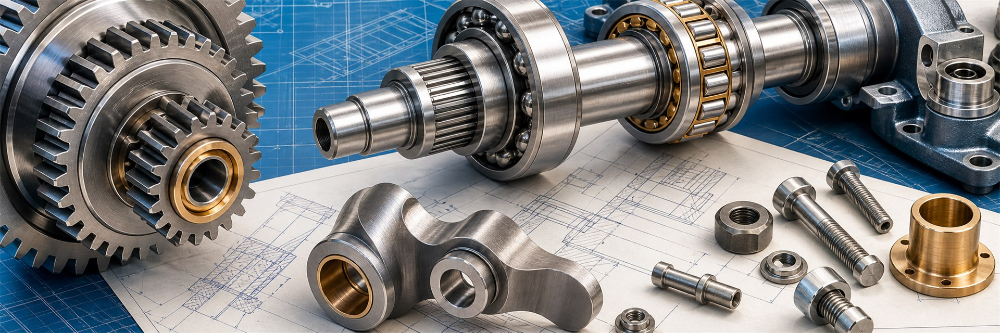

Powertrain Interativo: nova ferramenta didática do LASME
Exemplo calculado relacionando rotação do motor, redução do câmbio, diferencial e velocidades das rodas em reta e em curva.
Ler artigo
O Barbudenge reúne materiais de estudo sobre transmissões mecânicas, começando por engrenagens cilíndricas, relações de transmissão e trens compostos, e avançando para planetárias, diferenciais e cames.
Os textos combinam explicações conceituais, equações, exemplos de aula e figuras técnicas para apoiar estudantes e profissionais que precisam interpretar mecanismos antes de partir para o cálculo.
O site é mantido por Artur Henrique de Freitas Avelar, professor da UFSJ, e organiza temas que aparecem em disciplinas de mecanismos e elementos de máquinas: dentes de engrenagens, trens de transmissão, planetárias, cames e ferramentas de visualização.
A leitura começa com grandezas básicas como módulo, número de dentes e diâmetro primitivo. Depois passa por trens simples e compostos, onde entram acoplamentos de eixo, sentido de rotação e valor do trem.
Essa base prepara o estudo de planetárias e diferenciais, em que o braço móvel exige trabalhar com velocidades relativas antes de interpretar a velocidade absoluta dos elementos.
Os artigos de cames discutem seguidores, curvas de deslocamento, velocidade, aceleração, ângulo de pressão, raio de base e curvatura. A ideia é ligar a lei de movimento ao perfil físico que será fabricado.
Novos artigos do portal sobre mecanismos, transmissões, engrenagens, cames e outros temas de engenharia mecânica aplicada. Esta área destaca os textos mais recentes à medida que forem publicados.
Exemplo calculado relacionando rotação do motor, redução do câmbio, diferencial e velocidades das rodas em reta e em curva.
Ler artigo
Escolha de curvas SVAJ para parada, velocidade constante, movimento cicloidal, harmônico e polinomial de oitavo grau.
Ler artigo
Uso do novo módulo para sintetizar planetárias simples e compostas a partir de relações e restrições de montagem.
Ler artigo
História, montagem e funcionamento de um mecanismo em que três engrenagens apresentam movimentos aparentemente contraditórios.
Ler artigo
Montagem de três planetárias consecutivas no Engrenarium, com dentes, vínculos e seis relações de marcha.
Ler artigo
Leitura de um conjunto Ravigneaux com duas solares, planetas longos e curtos, overdrive e marcha ré.
Ler artigoOs artigos estão organizados como uma sequência de estudo. Primeiro vêm conceitos de engrenagens e trens de transmissão; depois, aplicações com planetárias e diferenciais; por fim, cames, curvas de movimento e projeto analítico.
O índice reúne os textos por assunto: engrenagens e trens, planetárias, CVT, diferenciais, cames e projeto. Ele ajuda a escolher entre uma revisão conceitual rápida e uma leitura mais aprofundada.
Use-o quando quiser comparar temas próximos, como trem composto e planetária composta, ou curva de deslocamento e projeto analítico de came.
Abrir índice de artigosTextos sobre nomenclatura, perfil evolvente, módulo, trens simples, trens compostos, relação de transmissão, câmbio manual e engrenagens especiais.
Essas páginas criam a base para entender aplicações mais avançadas e a análise de planetárias.
Começar pela introduçãoArtigos sobre caso geral, valor do trem, aplicações em transmissões automáticas, redutores compactos, CVT, planetárias compostas e diferenciais.
A trilha também se conecta ao Engrenarium, que permite visualizar como entrada, saída, elemento fixo e braço alteram a velocidade em arranjos epicicloidais.
Ler sobre o caso geralConjunto de textos sobre nomenclatura, seguidores, curvas cicloidais, harmônicas, polinomiais, ângulo de pressão, raio de base e curvatura.
O objetivo é mostrar como um perfil de came nasce de uma especificação de movimento e de verificações geométricas.
Ler fundamentos de camesAlém dos artigos, o site aponta para ferramentas e ambientes ligados ao estudo de mecanismos. O Engrenarium complementa os textos de planetárias com visualização interativa, enquanto o LASME reúne atividades de ensino, pesquisa e desenvolvimento.
Página que reúne o Engrenarium software, o Engrenarium Web e o Powertrain Interativo, com links, contexto dos projetos e artigos técnicos relacionados.
Página institucional do laboratório de pesquisa e ensino ligado a mecanismos, transmissões, software e ferramentas computacionais em engenharia mecânica.
Respostas curtas para dúvidas comuns, acompanhadas da página de projetos com links para o simulador, o software e ferramentas didáticas relacionadas.
O Engrenarium é um simulador web de engrenagens planetárias com finalidade educacional e técnica. Ele ajuda a visualizar arranjos epicicloidais e a discutir relações cinemáticas entre entrada, saída e braço.
Existe versão web e versão completa para Windows. A versão web permite conhecer o recurso rapidamente; a versão desktop pode ser usada quando se deseja trabalhar com a ferramenta fora do navegador.
Não. Além do simulador, há artigos sobre engrenagens, trens compostos, diferenciais, cames e curvas de movimento. O Engrenarium complementa esses textos quando a visualização do trem planetário ajuda a entender o cálculo.
O material foi organizado para estudantes, docentes e profissionais que precisam de explicações claras sobre mecanismos, engrenagens e recursos de apoio didático em engenharia mecânica.
Use o e-mail disponível na seção de contato ou na página Sobre para dúvidas sobre conteúdo técnico, ferramentas ou contexto institucional do portal.
Definições objetivas de termos frequentes no estudo de engrenagens, transmissões e mecanismos.
Os livros abaixo reúnem mecanismos clássicos, dispositivos e soluções de movimento. Eles dialogam com os temas do site porque mostram como pares de engrenagens, cames, alavancas e transmissões aparecem em aplicações reais.

Obra traduzida com mecanismos ilustrados e descrições de funcionamento em aplicações diversas, útil como material de consulta para estudantes e interessados em síntese de movimento.
Editora Blucher, 2019

Compêndio traduzido com ampla variedade de mecanismos, dispositivos e soluções mecânicas clássicas, útil para consultar alternativas de transmissão, guia, comando e transformação de movimento.
Barbudenge, 2025
Para dúvidas sobre engrenagens, cames, mecanismos, Engrenarium ou materiais didáticos ligados à UFSJ, utilize os contatos e links abaixo.
Canal para dúvidas sobre o simulador, os artigos publicados e os temas de mecanismos tratados no site.